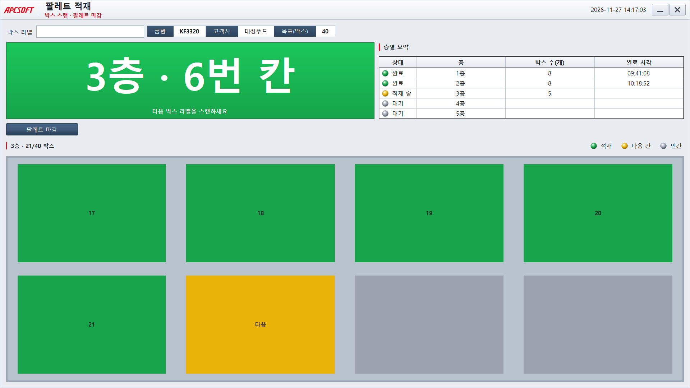
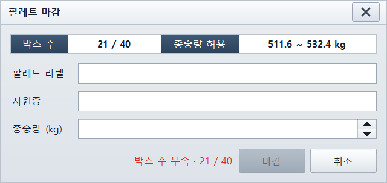
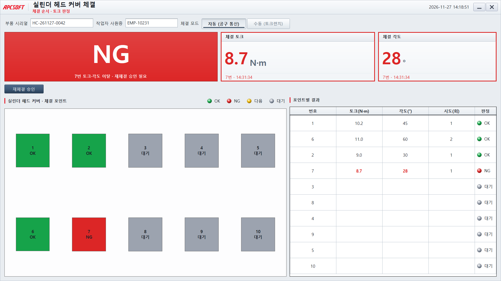
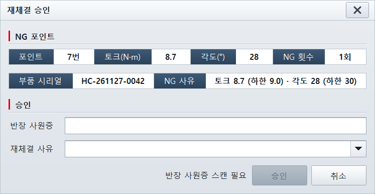
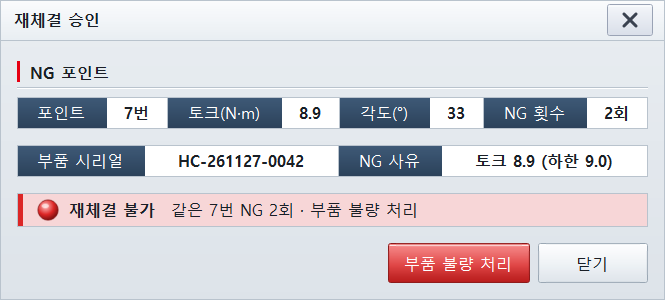
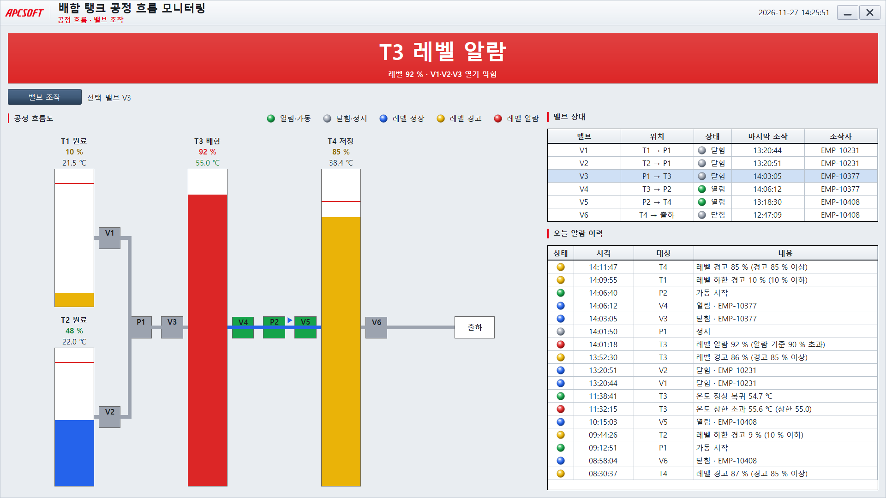
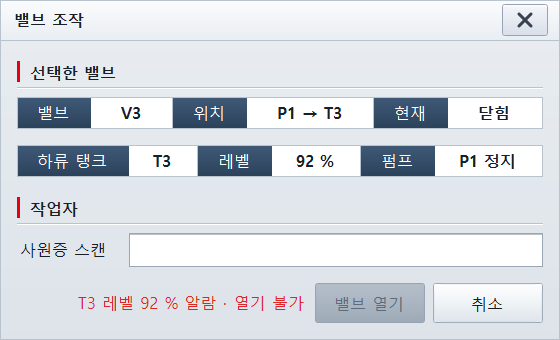

R4 뒤에 고친 것은 Label 조립 도식의 배치입니다. 영역을 고르게 나누는 ApcLayout.Slots를 추가했고, 24 px 이하 긴 막대(배관)를 겹침 점검에서 빼는 예외를 넣었으며, 지침에 Placement 절을 더했습니다(1.31.0.0). 같은 화면 3종을 R4와 같은 프롬프트로 다시 시연했습니다. 세 시연 모두 Slots를 썼고, 빌드 경고·오류 0, render 점검 0건으로 끝났습니다. 5회 연속 감점이던 체결 도식의 빈 가운데와 탱크 간격이 풀려 합계가 57 → 59가 됐습니다.
| 수정 | M1 | M2 | M3 | 결과 |
|---|---|---|---|---|
ApcLayout.Slots | ✓ | ✓ | ✓ | M1 칸 Slots(4, 2, 0.88). M2 볼트 Slots(5, 2, square) → 볼트가 윤곽 폭 전체에 고르게 퍼지고 크기 64 → 약 130 px. M3 탱크 Slots(4, 2) + 탱크 사이 Slots(3, 1) → 간격이 고름. 고정 px 상한(Math.Min(Px(64), …)) 사라짐 |
| 배관 겹침 예외(24 px 이하) | — | — | ✓ | 배관을 토막으로 끊지 않고 한 줄로 이어 그림(R3·R4의 토막 우회 사라짐). 점검 0건 |
| 지침 Placement 절 | ✓ | ✓ | △ | M3는 탱크 폭만 줄일 방법이 없어 칸 폭 × 0.30 상수를 곱함 — "손으로 정한 비율 금지"와 충돌하는지 모호하다고 보고 |
| 회차 | APC.UI | M1 | M2 | M3 | 합 | 토큰 합 |
|---|---|---|---|---|---|---|
| 1127-M | 1.27 | 19 | 19 | 19 | 57 | 413k |
| R | 1.28.0 | 19 | 20 | 19 | 58 | 389k |
| R2 | 1.28.1 | 20 | 19 | 19 | 58 | 376k |
| R3 | 1.29.0 | 19 | 19 | 19 | 57 | 415k |
| R4 | 1.30.0 | 19 | 19 | 19 | 57 | 374k |
| R5 | 1.31.0 | 19 | 20 | 20 | 59 | 404k |
10항목 × 2점(✓ 2, △ 1). 2번은 스캔과 Primary 하나가 판정판 바로 아래에 있는지를 봅니다. 9번은 경계가 입력값에만 있으면 판정 코드로 확인합니다. 샘플 값끼리의 정합성은 보지 않습니다.
| 시연 | 시간 | 도구 | 토큰 | R4 대비 |
|---|---|---|---|---|
| M1 팔레트 | 2분 57초 | 18 | 109k | −8k |
| M2 체결 | 4분 44초 | 20 | 130k | +5k |
| M3 탱크 | 11분 47초 | 39 | 165k | +33k |
| 합 | 19분 28초 | 77 | 404k | +30k |
시연 에이전트 3개의 토큰만 셌습니다(하네스 집계). M3가 늘어난 이유는 render PNG에서 z-order가 반영되지 않아(아래 첫 줄) 배관이 밸브 글자를 가리는 문제를 여러 번 고쳐 보다 우회한 것입니다.
두 번 이상 나온 것만 손볼 곳으로 올립니다.
| 결과 | 나온 시연 | 판단 | 메모 |
|---|---|---|---|
| render PNG가 z-order를 거꾸로 그림 | R3-M3 · R5-M3 | 손볼 곳 | SendToBack/BringToFront를 해도 PNG에서 배관이 밸브 글자를 가림 → 밸브 글자 위쪽 정렬 + 배관 8 px로 우회. 원인: src/APC.UI.Tools/Renderer.cs:171이 DrawToBitmap으로 캡처하는데, WinForms DrawToBitmap은 형제 컨트롤을 z-order 반대로 그리는 알려진 동작이 있음. 실제 화면과 PNG가 달라 에이전트가 맞는 코드를 고치게 됨. M3 시간·토큰 증가의 주원인 |
| 상태별 dialog render | R2 · R3 · R4 · R5-M2 | 관찰 | 이번엔 파생 클래스 RetightenBlockedDialog를 만들어 두 상태를 모두 render함. 같은 화면에서만 4회 |
| 짧은 고정 행 표를 Fill 도식 옆에 둘 곳 | R4-M1 · R5-M1 (R4-M3 같은 뿌리) | 관찰 | M1이 5행 층별 요약을 판정판과 같은 줄에 넣어 판정판이 표 높이만큼 커짐. 도식이 전체 폭으로 넓어져 칸 순번 글자가 상대적으로 작아짐(6번 △) |
Slots로 폭만 줄이기 | R5-M3 | 편차 | fill 하나가 가로·세로를 같이 줄여, 세로로 긴 탱크는 칸 폭 × 0.30 상수를 따로 곱함. 지침 "손으로 정한 비율 금지"와 충돌하는지 모호 |
| 기타 1회 | R5 | 편차 | Row() 안 사유 글자 위치(M2) · 상태별로 Primary 글자 바꾸기 예시 없음(M2) · 범례 있는 Titled와 없는 Titled 제목 줄 높이 어긋남(M2) · Titled 두 개 세로 쌓기 방법 없음(M3) · 목표 미달인데 메인 [팔레트 마감]이 켜짐, dialog에서만 막음(M1, 요청 범위 안) |


| # | 항목 | 점수 | 근거 |
|---|---|---|---|
| 1 | 3초 정보 | ✓ | 판정판 "3층 · 6번 칸", 도식 다음 칸은 "다음"으로만 → R4의 두 번호 체계 충돌 사라짐 |
| 2 | 주 동작 | ✓ | 판정판 바로 아래 Primary 하나 |
| 3 | 메인 막기 | ✓ | 거부 스캔 경고 + 사유. 목표 미달은 dialog에서 막음(메인 버튼은 켜짐) |
| 4 | dialog 차단 | ✓ | "박스 수 부족 · 21 / 40" + [마감] 꺼짐, ScanOnly, 빈칸 시작 |
| 5 | 새 레이아웃 | ✓ | Slots로 2×4 고른 칸, 범례, 제목 진행 |
| 6 | 레이아웃 마무리 | △ | 칸이 화면 폭 전체로 커졌는데 순번 글자는 기본 크기 → 큰 색 면 안에 작은 숫자. 판정판이 옆 표 높이에 끌려 커짐 |
| 7 | 빌드·점검 | ✓ | 0/0, 0건 |
| 8 | 요청 항목 | ✓ | 전부 |
| 9 | 경계값 | ✓ | WeightReason >/<로 경계 OK |
| 10 | 지침 피드백 | ✓ | Fill 옆 짧은 표, 큰 칸 글자 크기, 판정판 셀과 Primary 위치 |
2분 57초, 도구 18회, 토큰 109k.
1) 화면 — MainForm, PalletCloseDialog. Views/PalletBoard.cs(Panel + Label 8개, ApcLayout.Slots(4, 2, 0.88, square false)), 기준값 Data/PalletRules.cs. 빌드 0/0, 점검 0건.
3) UX 결정 — 스캔 줄(+ 작업 지시 ApcInfoStrip) → 판정판 "3층 · 6번 칸" + 층별 요약 표(같은 줄) → Primary [팔레트 마감] → 도식 2×4(Fill) + 범례. 거부 스캔은 ApcDialog.Warn만. dialog 라벨·사원증 ScanOnly, 총중량 빈칸 시작, 샘플 21/40 막힌 상태.
5) 모호했던 점 — 5행 표를 Fill 옆에 둘 수 없어 판정판 줄로. 넓은 칸의 글자를 키울 수 없음(글자 배수 금지). 판정판이 Columns 셀이라 Primary는 전체 폭 Row 왼쪽. "다음 칸"=Warn 색 vs 판정판 정상 진행=Run.



| # | 항목 | 점수 | 근거 |
|---|---|---|---|
| 1 | 3초 정보 | ✓ | 판정판 NG + "7번 토크·각도 이탈", 큰 토크·각도 카드 빨강 |
| 2 | 주 동작 | ✓ | 판정판 바로 아래 Primary 하나 |
| 3 | 메인 막기 | ✓ | 스캔 전 값 거부, 순서 오류 거부, 승인 전 체결 불가 |
| 4 | dialog 차단 | ✓ | NG 2회째 "재체결 불가" + 불량 처리만, 1회는 반장 스캔 전 [승인] 꺼짐 |
| 5 | 새 레이아웃 | ✓ | 윤곽 안 볼트 10개 + 범례 |
| 6 | 레이아웃 마무리 | ✓ | Slots로 볼트가 윤곽 폭 전체에 고르게, 크기 64 → 약 130 px. 5회 연속 "가운데 빔" 해소(두 줄 사이 띠는 남음) |
| 7 | 빌드·점검 | ✓ | 0/0, 0건 |
| 8 | 요청 항목 | ✓ | 전부 |
| 9 | 경계값 샘플 | ✓ | 9.0/30, 11.0/60 OK, >=/<= |
| 10 | 지침 피드백 | ✓ | Row 안 사유 위치, 상태별 Primary, 상태별 dialog render, 제목 줄 높이 |
4분 44초, 도구 20회, 토큰 130k.
1) 화면 — MainForm, RetightenApprovalDialog(NG 1회), RetightenBlockedDialog(NG 2회, 파생 클래스). Views/BoltBoard.cs(Label 10개, Slots(5, 2, square)), 규칙 Data/TightenRules.cs. 빌드 0/0, 점검 0건.
3) UX 결정 — 시리얼·사원증(ScanOnly) + 모드 탭 → 판정판 + 토크·각도 카드(Footer "7번 · 14:31:34") → Primary 하나(상태별 "체결값 확정"/"재체결 승인", 막히면 꺼짐 + 이유) → 도식 + 결과 표(체결 순서대로, FillRows). 수동 모드일 때만 입력칸. 순서 오류는 값 버림 + 판정판 노랑 + 경고.
5) 모호했던 점 — Row() 안 사유 위치. Primary 하나인데 주 동작이 상태별로 둘. 판정판 SubText 두 부분 제한. 막힌 상태 샘플 규칙 때문에 dialog 파생 클래스. 범례 유무로 제목 줄 높이 어긋남.


| # | 항목 | 점수 | 근거 |
|---|---|---|---|
| 1 | 3초 정보 | ✓ | 판정판 "T3 레벨 알람" + "V1·V2·V3 열기 막힘" |
| 2 | 주 동작 | ✓ | 판정판 바로 아래 Primary 하나 + 선택 밸브 |
| 3 | 메인 막기 | ✓ | 미선택 시 버튼 꺼짐, 막는 조작은 dialog에서 이유와 함께 |
| 4 | dialog 차단 | ✓ | "T3 레벨 92 % 알람 · 열기 불가" + 확정 꺼짐 |
| 5 | 새 레이아웃 | ✓ | 탱크 틀·채움·알람선, 이어진 배관, 밸브·펌프, 흐름 화살표 |
| 6 | 레이아웃 마무리 | ✓ | Slots로 탱크 사이 간격 고르게(R4 들쭉날쭉 해소), 배관 토막 없음. 남은 흠: 밸브 글자 위쪽 정렬·배관 8 px(render z-order 우회), 흐름도 오른쪽 아래 빈 곳 |
| 7 | 빌드·점검 | ✓ | 0/0, 0건 |
| 8 | 요청 항목 | ✓ | 전부 |
| 9 | 경계값 샘플 | ✓ | T3 55.0 ℃ OK, T4 85 % 경고, T1 10 % 하한 경고, 알람은 > 90 |
| 10 | 지침 피드백 | ✓ | render z-order, Slots 폭만 줄이기, Titled 세로 쌓기 |
11분 47초, 도구 39회, 토큰 165k.
1) 화면 — MainForm: 판정판 → Primary [밸브 조작] + "선택 밸브 V3" → 왼쪽 흐름도, 오른쪽 밸브 표 6행 · 알람 이력 17행. ValveDialog(V3 열기가 T3 92 %로 막힘). Views/FlowBoard.cs, 규칙 Data/FlowRules.cs. 빌드 0/0, 점검 0건.
3) UX 결정 — 판정판은 공정 전체 최악 1건. 밸브는 표 행·흐름도 상자를 눌러 선택. dialog 동작은 현재 상태의 반대 하나, 사원증 ScanOnly. 흐르는 배관만 파랑 + ▶, 탱크 채움 정상 파랑(Info), 90 % 알람선.
5) 모호했던 점 — 탱크 폭만 줄이려 Slots 결과에 0.30 상수를 곱함. render에서 z-order가 반영되지 않아 배관이 밸브 글자를 가림 → 글자 위쪽 정렬 + 배관 8 px. Titled 두 개 세로 쌓기 방법 없음.